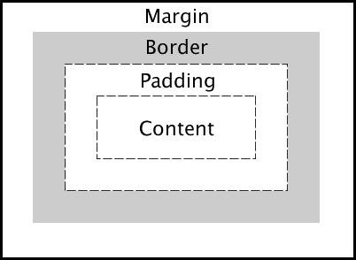

Theory
Slide 1
CSS Margin and Paddings
Maksim Efoshkin CIT 230
Slide 2
What is the Difference?
- Margin is "something" that affects the outside of the border.
- Padding is "something" that affects the inside of the border and between the content.
Slide 3
- Content may represent either text or a picture , or any other element
- Border is a visual line that separates content with the “other world”(i.e. other content on the page)
- Padding and Margin make the separete content, border, page contect and therefore make visual difference.
Slide 4
How to declare a Padding
- article{padding: 25px(Top) 50px(right) 75px(bottom) 100px(left);}
- article{padding: 25px(Top) 50px(right\left) 75px(bottom);}
- article{padding: 25px(Top\bottom) 50px(right\left);}
- article{padding: 25px(All sides);}
Slide 5
How to declare a Margin
- article{padding: 25px(Top) 50px(right) 75px(bottom) 100px(left);}
- article{padding: 25px(Top) 50px(right\left) 75px(bottom);}
- article{padding: 25px(Top\bottom) 50px(right\left);}
- article{padding: 25px(All sides);}